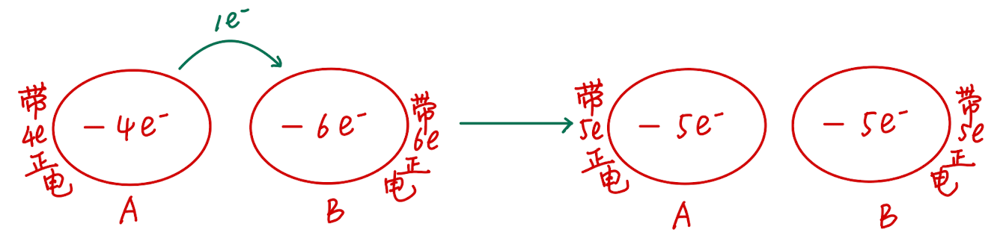
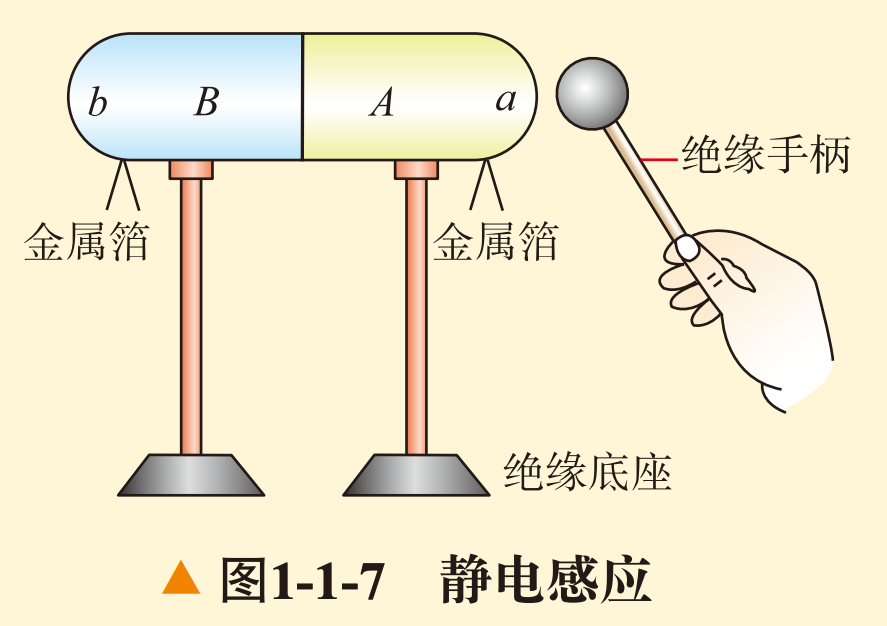

U1-1 电荷 电荷守恒定律¶
概说¶
从现在开始，我们要进入高二的物理必修三的学习了。先交代一下我的写作风格吧——
-
正文部分保持严谨准确的风格，但是会尽量用一些比较通俗的语言来表达一些概念。
-
例题部分会使用Admonitions（提示框）来框定题目，并且会在题目下方给出解答。
-
对于正文之外的我的闲话，会以footnotes（脚注）或者简单的“括号”的形式来表达。
-
对于一些补充性的概念，也会使用Admonitions（提示框）来框定概念或以footnotes（脚注）的形式表达。
再来说说物理必修三。必修三主要包括以下几个章节：
-
第一章：静电场
-
第二章：电路及其应用
-
第三章：电磁场与电磁波初步
-
第四章：能源与可持续发展
可以看出来，这本书主要讲电学、电磁场和能源的相关知识。其中，电路及其应用和电磁场与电磁波初步是比较重要的章节，因为它们涉及到我们生活中很多的问题。比如，我们在使用电器的时候，就需要了解电路的原理，这样才能保证我们的电器正常工作。同样，我们在使用电视、手机等电子设备的时候，也需要了解电磁场的原理，这样才能保证我们的电子设备正常工作。最后，能源与可持续发展也作为当前的一个热点话题，也需要我们简单掌握。
好了，现在正式进入物理必修三第一章《静电场》第一节《电荷 电荷守恒定律》的学习吧。
电荷¶
我们已知的电荷¶
在初中，我们已经初步接触过电荷的概念了。我们知道，正电荷是用丝绸摩擦过的玻璃棒所带的电荷，而负电荷是用毛皮摩擦过的橡胶棒所带的电荷。我们也知道，同种电荷相互排斥，异种电荷相互吸引。
如果记性再好一点，我们也会想起来，表示电荷的多少的物理量叫做电荷量，简称为电荷，单位是库仑，用符号 \(C\) 表示。通常正电荷的电荷量用正数表示，负电荷的电荷量用负数表示。
对于电荷量的常用单位，我们有以下换算关系：
元电荷
一个电子所带的电荷量的绝对值为 \(1.602 \times 10^{-19} C\)。称为元电荷，记作： \(e = 1.602 \times 10^{-19} C\)。它是一种基本单位，因为我们发现任何带电体所带的电荷量都是元电荷的整数倍。（可以类比化学中的阿伏伽德罗常数）
到目前为止，这些内容都是初中物理讲过的“旧知识”。那么，上了高中，我们对电荷的了解就不能停留在这么肤浅的层面了。我们需要了解更多关于电荷的「高级知识」。
摩擦起电¶
由初中化学知识可知（不是说好了高级知识吗），我们知道，物质由原子组成，而原子又由原子核和电子组成。原子核带正电荷，电子带负电荷。通常情况，原子核的正电荷数等于电子的负电荷数。所以物体整体对外不显电性。
在摩擦的过程中，由于不同物体的原子对于外层电子的束缚能力不同，束缚能力差的原子的外层电子会转移到束缚能力强的原子中去。这样，一个物体就失去了电子，总核电荷数大于电子电荷数，物体对外显正电；另一物体得到了电子，电子电荷数大于核电荷数，物体对外显负电。并且，由于这个过程中电子的转移局限在相互摩擦的两物体之间，所以摩擦过后两物体所带的电荷必然是「等量异号」的。
导体和绝缘体
导体指容易导电的物质，绝缘体指不容易导电的物质。导体中外层电子容易脱离原子核，在物体内部自由运行，成为自由电子。当这些自由电子开始发生定向移动时，导体内部就形成了电流，电流的方向与自由电子移动的方向相反。绝缘体中原子核束缚能力很强，几乎没有自由电子存在，所以很难形成电流。
电荷守恒定律¶
因为电荷不能被创造，也不能被消灭，它们只能从一个物体转移到另一个物体，或者从物体的一部分转移到另一个物体。这就是电荷守恒定律的内容。在任何自然过程中，电荷的代数和是守恒的。
电荷守恒定律的内容只有这么多，下面是一道例题。
例题
完全相同的两金属小球\(A\)、\(B\)带有相同的电荷量，相隔一定的距离，今让第三个完全相同的不带电金属小球\(C\)，先后与\(A\)、\(B\)接触后移开。
-
若\(A\)、\(B\)两球带同种电荷，接触后两球的电荷量大小之比为多大？
-
若\(A\)、\(B\)两球带异种电荷，接触后两球的电荷量大小之比为多大？
先说解法。在计算接触的两材质相同物体的电荷的转移时，其所带的电荷相加（相同电荷直接相加，异种电荷相减），将计算所得的结果取绝对值，就是这两物体的总电荷量，每个物体的电荷量就用总电荷量除以2即可。
想要知道为什么这么计算，我们的视野需要回到微观层面。在两相同材质物体接触时，由于两物体原子的原子核对电子的束缚能力相同，外层电子将会在两物体之间均分。当两物体同时带正电/负电时，两物体都缺少/富余电子。物体接触、电子均分后，两物体的总电荷量不变，每个物体的电荷量变为原来电荷总量的 \(\cfrac 1 2\) 。
如果不好理解，可以参考下面的图。

请注意， \(-e^-\) 表示失去一个电子，带一个单位正电。
所以在这道题中，我们不妨设金属小球\(A\)、\(B\)都带一个单位的电荷。
对于1问，若\(A\)、\(B\)两球带同种电荷，根据电荷守恒定律，我们知道，\(A\)、\(C\)两球的总电荷量为 \(e\) ，所以第一次接触后，两球的电荷量分别为 \(A\) 球： \(\cfrac {1} {2} e\) ，\(C\) 球： \(\cfrac {1} {2} e\) 。 \(B\)、\(C\) 两球的总电荷量为 \(\cfrac {3} {2} e\) ，所以第二次接触后，两球的电荷量分别为 \(B\) 球： \(\cfrac {3} {4} e\) ，\(C\) 球： \(\cfrac {3} {4} e\) 。
所以1问中，\(A\)、\(B\)两球电荷量大小的比值为：
对于2问，若\(A\)、\(B\)两球带异种电荷，根据电荷守恒定律，我们知道，\(A\)、\(C\)两球的总电荷量为 \(e\) ，所以第一次接触后，两球的电荷量分别为 \(A\) 球： \(\cfrac {1} {2} e\) ，\(C\) 球： \(\cfrac {1} {2} e\) 。 \(B\)、\(C\) 两球（异种电荷）的总电荷量为 \(\cfrac {1} {2} e\) ，所以第二次接触后，两球的电荷量分别为 \(B\) 球： \(\cfrac {1} {4} e\) ，\(C\) 球： \(\cfrac {1} {4} e\) 。
所以2问中，\(A\)、\(B\)两球电荷量大小的比值为：
静电感应¶
首先，关于书上的实验，推荐大家去b站搜索相关视频先看一遍。
静电感应是指当一个带电体靠近一个不带电的导体时，导体内部的电子会受到带电体的影响而发生定向移动，从而使导体的一部分带正电，另一部分带负电。这个现象就是静电感应。

在这个实验中，当我们把带正电的小球靠近枕形导体的 \(a\) 端，电子将会重新分布，\(a\) 端显负电，\(b\) 端显正电。
当把 \(a\) 、 \(b\) 两端分开以后，再移开带电的球，由于 \(a\) 、 \(b\) 两端不再导通，所以电荷无法重新排布，两端依旧显电性。
合拢分开的 \(a\) 、 \(b\) 两端后，电荷重新分布均匀，两端均不带电。
验电器相关实验¶
验电器的结构初中已经学过，这里我们说它的两种用法。
-
检测物体是否带电。
- 当物体带电时，将物体靠近验电器上端金属小球，发生静电感应，下端金属箔带上与物体同种的电荷，箔片张开。
-
检测物体带电的正负性
-
先使用带正电的物体接触小球，让其间电荷发生转移，验电器就带上了正电。此时移开带正电的物体，箔片不闭合。
-
再使用带检验的带电体靠近金属小球，若物体带正电，根据静电感应的原理，金属箔将带更多正电，张开角度变大；反之，若物体带负电，金属箔将带更少正电，张开角度将减小。
-
自我评价（课后习题）
1.甲、乙两个金属小球相互作用。已知甲球带正电荷，在下面两种情况下，判断乙球是否带电，如果带电，带哪种电荷？
（1）两小球相互排斥；
（2）两小球相互吸引。
解答：（1）乙球带正电（2）乙球带负电
2.不带电的金属导体A与带正电的金属导体B接触之后也带正电，原因是（ ）
A. B有部分正电荷转移到A上 B. A有部分正电荷转移到B上
C. A有部分电子转移到B上 D. B有部分电子转移到A上
解答：C。正电荷即为质子，不发生转移，发生转移的只能是负电荷（电子）。
3.如图1-1-7所示，带电小球靠近（不接触）枕形导体的一端，下面的金属箔片都张开，这种现象叫作“静电感应”，而不能叫作“感应起电”，为什么？
解答：静电感应是指，在外部带电体的作用下，导体内部电子发生移动，根据“同性相斥，异性相吸”的原理重新排布，使得导体不同部分电性不同的现象。静电感应现象中导体所带的总电荷不变，只是发生了重新排布。起电的意思是，导体内部的电荷转移到外部，使得导体整体总电荷量发生了改变。所以不能称为感应起电。
4.使18世纪电学家们感到困惑的一个现象是所谓的“吸引—接触—排斥”现象：将带电棒移近一悬挂在绝缘线上的轻质导体小球，可观察到球被吸引，若小球与棒接触后，它就立即被弹开。你如何解释这一现象？
解答：吸引过程中，由于“带电体可以吸附轻小物体的性质，小球被吸引。接触时，根据电荷守恒定律，两物体都带上了同种电荷。排斥过程，即为转移后两同性物体相斥的过程。
这一节终于结束了。有遗漏或疏忽的地方请到下方博客评论区指正。